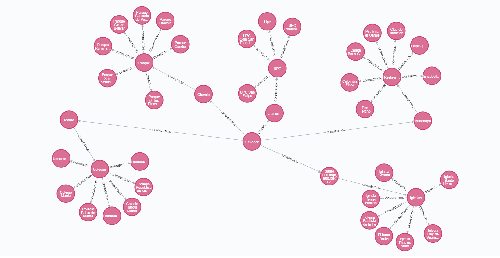

Fanny Gutama


A Estrella
iene como objetivo encontrar una ruta al nodo objetivo dado que tiene el menor costo (menos
distancia recorrida, tiempo más corto, etc.). Para ello, mantiene un árbol de rutas de acceso
que se origina en el nodo inicial y extiende esas rutas de un borde a la vez hasta que se cumple
su criterio de terminación.
En cada iteración de su bucle principal, A* necesita determinar cuál de sus rutas se extenderá.
Lo hace en función del costo de la ruta y una estimación del costo necesario para extender el
camino hasta el objetivo. Específicamente, A* selecciona la ruta que minimiza
Ejemplo
A* en acción donde los nodos son ciudades conectadas con carreteras y h(n) es la distancia en
línea recta al punto de destino
El algoritmo está buscando un camino entre Washington, D.C.
y Los Angeles.


BASE DE DATOS
Ir de Nodo central a destino
Ecuador Iglesia Central
Como inicio siempre tenemos que salir desde central nodo central {Ecuador}; hasta un nodo hijo, en este caso iremos al ilglesia central de Santo Domingo
MATCH(start:Station {name: 'Ecuador'}), ( end:Station {name: 'Iglesia Central'}) CALL gds.alpha.shortestPath.astar.stream({ nodeQuery: 'MATCH (p:Station) RETURN id(p) AS id', relationshipQuery: 'MATCH (p1:Station)-[r:CONNECTION]->(p2:Station) RETURN id(p1) AS source, id(p2) AS target, r.time AS weight', startNode: start, endNode: end, relationshipWeightProperty: 'weight', propertyKeyLat: 'latitude', propertyKeyLat: 'longitude' }) YIELD nodeId, cost RETURN gds.util.asNode(nodeId).name AS Nodo, cost as Distancia
Ecuador Parque Rumiñahui
Como inicio siempre tenemos que salir desde central nodo central {Ecuador}; hasta un nodo hijo, en este caso iremos al parque Parque Rumiñahui de Otavalo
MATCH(start:Station {name: 'Ecuador'}), ( end:Station {name: 'Parque Rumiñahui'}) CALL gds.alpha.shortestPath.astar.stream({ nodeQuery: 'MATCH (p:Station) RETURN id(p) AS id', relationshipQuery: 'MATCH (p1:Station)-[r:CONNECTION]->(p2:Station) RETURN id(p1) AS source, id(p2) AS target, r.time AS weight', startNode: start, endNode: end, relationshipWeightProperty: 'weight', propertyKeyLat: 'latitude', propertyKeyLat: 'longitude' }) YIELD nodeId, cost RETURN gds.util.asNode(nodeId).name AS Nodo, cost as Distancia
Con el método de búsqueda heurístico A* podemos encontrar el camino que tenga el menor coste posible. Aun que una vez encontrado el nodo meta no realice nuevas búsquedas para detectar si existe otros caminos y comparar para definir la ruta mas eficiente